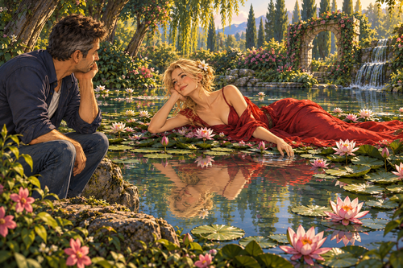

Reflections of you within my dreams are mirrors of an exciting,
joyful loving experience
and a caught vision of a perceived, dynamic reality.
And swirling around my mind are a nobility of feelings which curl around my very being,
to taste and glimpse a pinnacle or icicle of a boundless universe
and with that can I only wonder of God’s measured glory,
infinite pleasure and Her endless loving bliss,
As I roll with joy of you as my particular puzzle,
I have an inside view of your sweet nuzzle,
crowned by your furrowed creamy brow,
and serene, tranquil light beaming out of your awkward beautiful
and poignant, moving, caring face,
and especially do I ponder on your inquisitive,
tranced eyebrows which have a curious catlike pace,
This is expressed from myself with poems and verse and is seemingly lost in concept
and time to your sense data.
And with that time the nuance is cooked, baked and subsequently returned seasoned
and salted by your solicitous minds vocal responses,
With falsely imagined delay the participation is received, from you, with a fresh acuity on which I can
suckle on anew;
like drinking fingertip baby teardrop water from the dawn’s gift of peppered dew on newly born blades of
green luscious grass.
You may think what is this rhyming man trying to parlay?
Well it is simple really and it is only words in which I can convey a feeling
or meaning of true unconditional love,
and perhaps there is my hidden agenda bursting to negotiate more time and space with you,
I am sure you appreciate this wheeling and dealing with subtle thoughts and feelings do I play with you,
not with frivolous intension is my direction and my only wish is to spear you hard with love:
in your hearts red, bloody, pulsating flow
and hopefully ensure your life’s devotion to my:
body, mind, soul is an enduring compelling sanctity.
To make you love me absolute, urgently, irresistibly with no reservation – that is what I want from you.
A dedication which will know no bounds and serve us here and now and perhaps in the many lives we have yet
to fill
or maybe we will create our own space and time from which we will define the nature of our new dreamy world;
an original universe which is ours to sleep and maybe fantasise of,
I do not know why I have to write all these words of devotion,
you see you have given me a divine compulsive inspiration
and I know for sure that its such a satisfaction just to inscribe for you
and keeps away all my blues when I am not with you,
I want to shout to the world how I love, cherish and treasure you
and I so want to take care of you and all you needs and wants,
to be able to create the space for your complete creative, emotional, mental and physical expression
and naturally our ultimate sexual and spiritual fulfillment, developing to total and supreme commitment,
And if I cannot come deep inside you, which is the only way I know to fully express my love to you utterly,
I have no recourse but to write, talk on how much I adore
and worship you.
Leading where, is the question left unspoken in its zest, is liberated if we say that traveling on our
undiscovered,
mysterious journey of each other is a loving treat which competes well with my joy released in your
sensitive rosy coy destination!